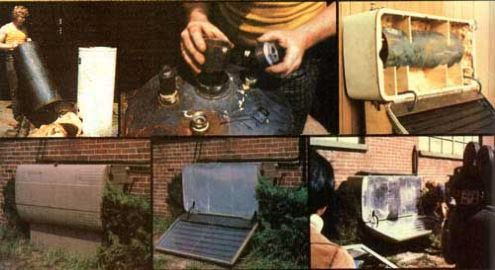

FIRST ROW . Demonstration of how gas water heater was taken apart so the tank inside could be used in our active water heating system ... the gas water heater tank was converted by welding a two-inch pipe coupling into both the top and the bottom of its central stack and screwing two-inch-to-three-quarter-inch reducing bushings into the couplings ... the passive water heating and storage system during assembly. SECOND ROW : The finished passive water heating and storage system an it looks mounted on MOTHER's research shop wall with its collector in the open position ... the system closed and locked for the night...Dennis demonstrates the system's operation for a Japanese television camera crew.